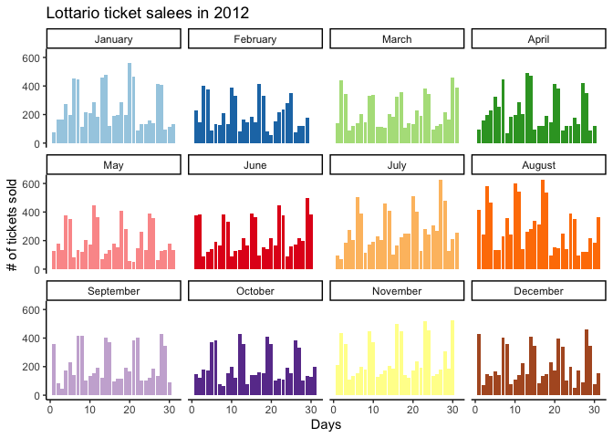
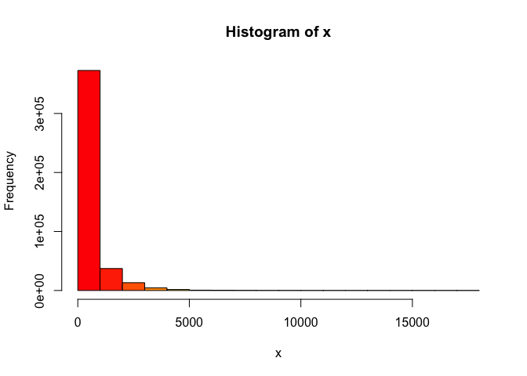
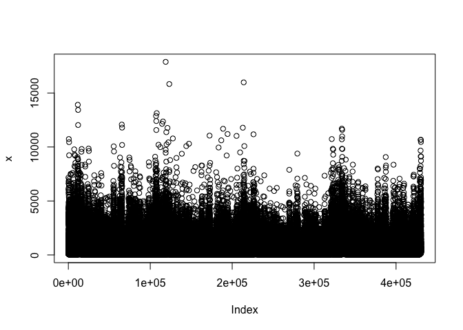

lottodata is an R data package designed to house data sets that can be easily accessible for me and everyone else working on the project. Check out this shiny app that uses the jackpot_size data set from this package.
Data
The package currently contains the following data sets:
| Date set name | Source | About | Description | Size |
|---|---|---|---|---|
jackpot_size |
Open Source Framework | 430,579 rows & 10 columns |
Jackpot size ($) and lotto ticket sales | 1.3 MB |
lotto_demographics |
Open Source Framework | 96 rows & 7 coloumns |
Demographic information about residents in Ontario, Canada |
5.4 MB |
jackpot_size
The variables included in the data set:
| Variable | Description | Type of variable |
|---|---|---|
zip_code |
The first 3 digits of postal code (geographical region) | string |
start_date |
The start of the sales date (year-month-day format) | date |
end_date |
The end of the sales date (year-month-day format) | date |
game |
The specific lottery game (one of: Lotto Max, Lotto 649, Lottario) | string |
ticket_sales |
Number of tickets sold | integer |
net_sales |
The total cad dollar amount of sales | integer |
jackpot_size |
The jackpot size in cad dollars | integer |
year |
Year | integer |
month |
Month | integer |
day |
Day | integer |
lotto demographics
The variables included in the data set:
| Variable | Description | Type of variable |
|---|---|---|
zip_code |
The first 3 digits of postal code (geographical region) | string |
geo_id |
Geography ID | integer |
income |
Per capita income levels | integer |
education |
Highest completed level of education for the population | float |
mbsa |
Proportion of time spent in white collar employment. White collar employment is defined as the proportion of residents aged 15 or greater employed in management, business finance and administration, health, education, law, social community and government services, art, culture, natural and applied sciences and related occupations, according to the National Occupational Classification |
float |
ses |
SES was calculated via takling the sum of the Z-scores of it’s per-capita income, years of education, and proportion of white-collar workers |
float |
description |
Describes where the location is in natural language | string |
Example
Suppose you want to look at the game Lottario more in 2014:
library(lottodata)
library(dplyr)
#>
#> Attaching package: 'dplyr'
#> The following objects are masked from 'package:stats':
#>
#> filter, lag
#> The following objects are masked from 'package:base':
#>
#> intersect, setdiff, setequal, union
# What is the yearly spending for the Lottario in zone M1B in 2012?
jackpot_size %>%
filter(year == 2012 & game == "Lottario" & zip_code == "M1B") %>%
head()
#> # A tibble: 6 x 10
#> zip_code start_date end_date game ticket_sales net_sales jackpot_size year
#> <chr> <date> <date> <chr> <dbl> <dbl> <dbl> <dbl>
#> 1 M1B 2012-01-01 2012-01-07 Lott… 75 233 730000 2012
#> 2 M1B 2012-01-02 2012-01-07 Lott… 167 516 730000 2012
#> 3 M1B 2012-01-03 2012-01-07 Lott… 168 466 730000 2012
#> 4 M1B 2012-01-04 2012-01-07 Lott… 274 841 730000 2012
#> 5 M1B 2012-01-05 2012-01-07 Lott… 195 558 730000 2012
#> 6 M1B 2012-01-06 2012-01-07 Lott… 451 1469 730000 2012
#> # … with 2 more variables: month <dbl>, day <int>ggplot2 example
library(ggplot2)
theme_set(theme_classic())
jackpot_data <- jackpot_size
jackpot_plot <- jackpot_data %>%
filter(year == 2012 & game == "Lottario" & zip_code == "M1B") %>%
ggplot(aes(day, ticket_sales, fill = as.factor(month))) +
geom_col() +
facet_wrap(~month, labeller = labeller(month =
c("1" = "January", "2" = "February", "3" = "March", "4" = "April", "5" = "May",
"6" = "June", "7" = "July", "8" = "August", "9" = "September", "10" = "October",
"11" = "November", "12" = "December"))) +
labs(x = "Days", y = "# of tickets sold", title = "Lottario ticket salees in 2012") +
theme(legend.position = "none") +
scale_fill_manual(values = c("#a6cee3","#1f78b4","#b2df8a","#33a02c","#fb9a99","#e31a1c",
"#fdbf6f","#ff7f00","#cab2d6","#6a3d9a","#ffff99","#b15928"))
jackpot_plot
Example exploratory data analysis:
# EDA via base R
jackpot_eda <- function(x){
hist(x, col = rainbow(30))
plot(x)
plot(density(x))
data.frame(min = min(x),
median = median(x),
mean = mean(x),
max = max(x),
sd = sd(x),
range =max(x) - min(x) )
}
jackpot_eda(jackpot_size$ticket_sales)
#> min median mean max sd range
#> 1 1 217 485.0569 17885 729.9844 17884Acknowledgement
We thank Dr. Ross Otto from Mcgill University for sharing these data sets on Open Source Framework. This project is being conducted with Dr. Luke Clark at the Centre for Gambling Research at UBC.
Code of Conduct
Please note that the lottodata project is released with a Contributor Code of Conduct. By contributing to this project, you agree to abide by its terms.